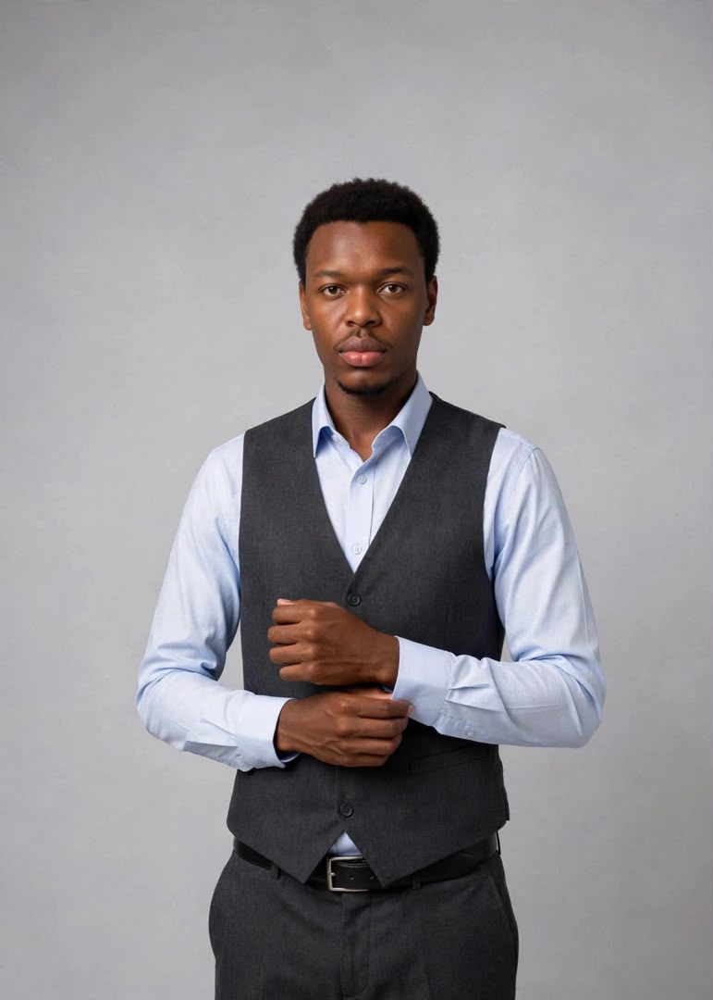
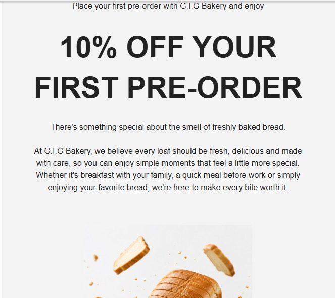
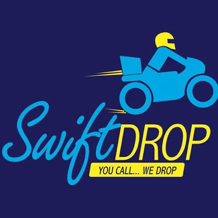
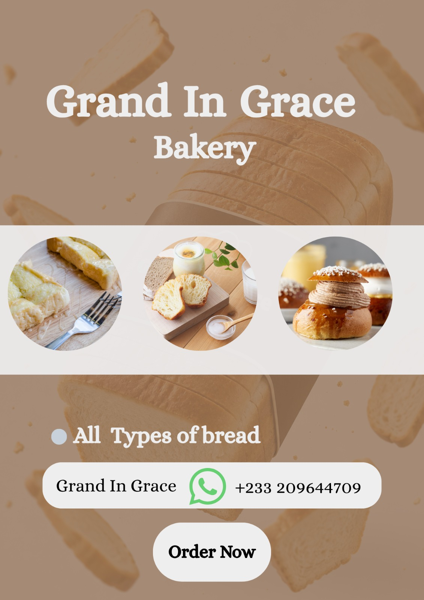
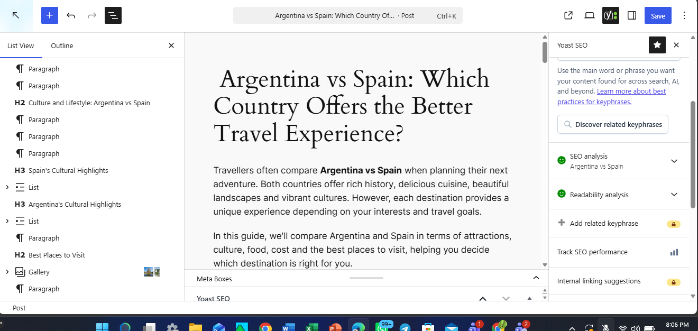
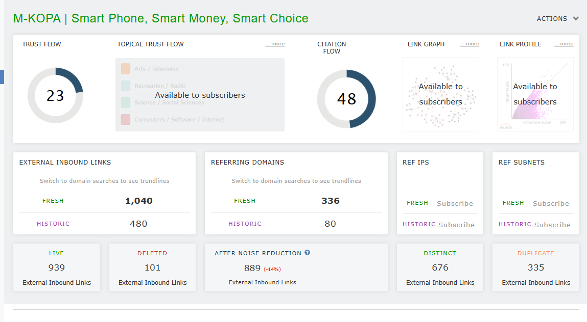

Digital strategy
Audience research, channel planning and practical roadmaps tied to clear business goals.
↗Digital Marketing Professional
I’m Emmanuel Oduro Larbi. I combine research, creative execution and performance insight to help brands improve visibility, engagement and growth.

I am a Digital Marketing Professional with hands-on experience in strategy, social media, SEO, paid advertising, email marketing, content creation and digital analytics.
My background in agricultural science and field research sharpened how I observe, analyse and communicate. Today, I apply that same discipline to understand audiences, solve marketing problems and turn findings into useful action.
Strategy, execution and measurement
Audience research, channel planning and practical roadmaps tied to clear business goals.
↗Keyword research, on-page optimisation, technical audits and content built around search intent.
↗Campaign ideas, platform-specific content and community-focused brand communication.
↗Customer journeys, campaign messaging and automation concepts that encourage action.
↗Google and Meta campaign planning supported by focused audiences, objectives and measurement.
↗Performance tracking with Google Analytics and Meta Insights to guide the next decision.
↗Digital strategies lead the collection, followed by promotional flyers and technical SEO work, exactly in the requested order.

01Digital marketing strategy · Email campaign
A digital marketing strategy designed to build awareness and attract customers, supported by an email campaign focused on first orders and repeat purchases.
Strategy · Customer messaging · Email marketing

02Digital marketing strategy · Logistics
A growth strategy for a logistics brand covering audience research, competitor analysis, SMART objectives, channel plans, KPIs and paid advertising recommendations.
Research · Acquisition · Measurement
Promotional flyer · Consumer technology
A product-led promotional flyer created to present a technology range clearly and move viewers towards a direct WhatsApp purchase action.
Graphic design · Product promotion · CTA

04Promotional flyer · Food service
A warm, product-focused bakery flyer designed to introduce the offer, show the product range and make ordering easy.
Canva · Visual hierarchy · Sales message

05SEO content optimisation · WordPress
Optimised a long-form travel comparison with a clear heading structure, focus keyphrase, metadata, internal links, image alt text and readability improvements.
Content SEO · WordPress · Yoast

06SEO website audit · Fintech
Reviewed authority, backlinks, on-page optimisation, metadata and keyword use, then developed practical recommendations to improve organic visibility.
SEO audit · Majestic · Recommendations
Generation Ghana · Hybrid, Accra
Developing and applying practical skills across integrated strategy, SEO, paid advertising, social media, email marketing and analytics through hands-on projects and client simulations.
Bunso Cocoa College · Eastern Region
Analysed field observations and research data, maintained accurate records and communicated evidence-based recommendations to support informed decisions.
An analytical academic foundation supported by practical digital marketing training and continuous hands-on learning.
Professional training programme
Bachelor of Science and Technology
WASSCE
Have a goal in mind?
Let’s make the next move.